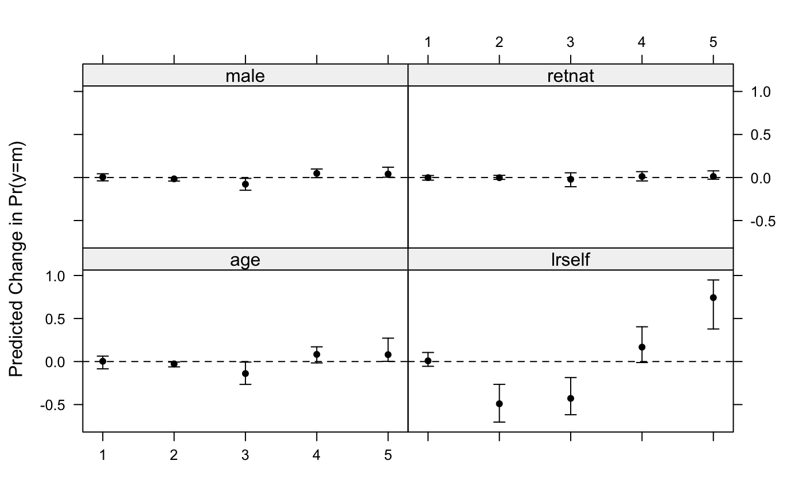

oc2plot.RdTakes the output from ordChange and turns it into a plot.
oc2plot(ordc, plot = TRUE)
| ordc | The output from |
|---|---|
| plot | Logical indicating whether a plot (if |
Either a lattice plot or a data.frame depending on the
specification of the plot argument.
library(MASS) data(france) polr.mod <- polr(vote ~ age + male + retnat + lrself, data=france) typical.france <- data.frame( age = 35, retnat = factor(1, levels=1:3, labels=levels(france$retnat)) ) oc.res <- ordChange(polr.mod, data=france, typical.dat=typical.france, sim=TRUE)#> #>#> PCF PS Green RPR UDF #> age -0.027* -0.140* 0.003 0.083 0.080* #> male -0.016* -0.078* 0.004 0.048 0.041* #> retnat -0.002 -0.021 -0.001 0.012 0.012 #> lrself -0.490* -0.428* 0.008 0.167 0.743*oc2plot(oc.res)